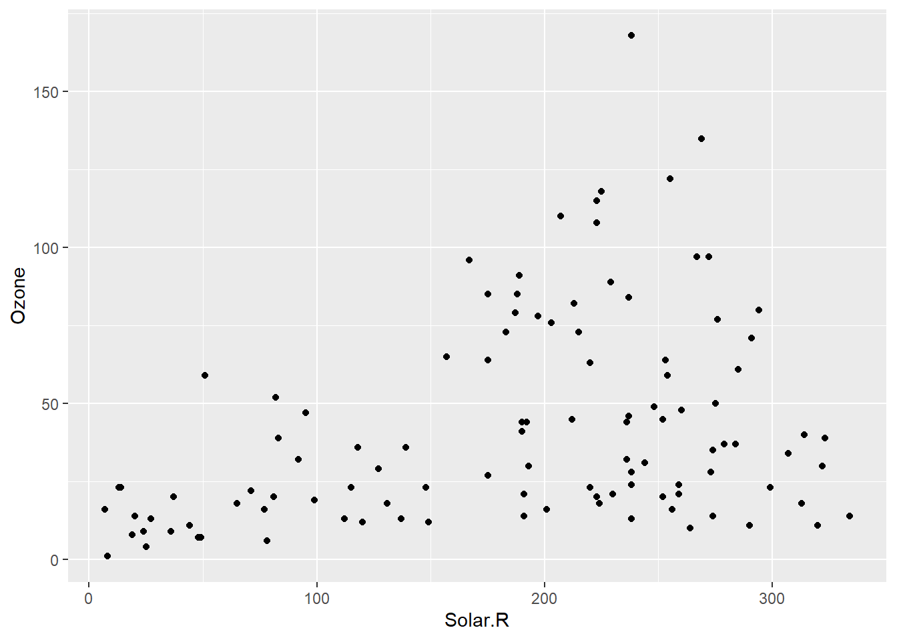

Introduction
In this worksheet, we will discuss how to perform basic inspection of a dataset and simple data-cleaning tasks.
We will be using the R package tidyverse for basic data manipulation and plotting.
```{r library-calls}
# load required library
library(tidyverse)
NCbirths <- read_csv(
"https://wilkelab.org/SDS375/datasets/NCbirths.csv",
na = c("", "NA", "#N/A")
) %>% naniar::replace_with_na_at("Weeks", ~.x < 0) # only change column "Weeks" to be safe
```
We will be working with the dataset NCbirths, which
contains data about 1450 births in the state of North Carolina in 2001.
```{r}
NCbirths
```
# A tibble: 1,450 × 15
ID Plural Sex MomAge Weeks Marital RaceMom HispMom Gained Smoke BirthW…¹
<dbl> <dbl> <dbl> <dbl> <dbl> <dbl> <dbl> <chr> <dbl> <dbl> <dbl>
1 1 1 1 32 40 1 1 N 38 0 111
2 2 1 2 32 37 1 1 N 34 0 116
3 3 1 1 27 39 1 1 N 12 0 138
4 4 1 1 27 39 1 1 N 15 0 136
5 5 1 1 25 39 1 1 N 32 0 121
6 6 1 1 28 43 1 1 N 32 0 117
7 7 1 2 25 39 1 1 N 75 0 143
8 8 1 2 15 42 2 1 N 25 0 113
9 9 1 2 21 39 1 1 N 28 0 120
10 10 1 2 27 40 2 1 N 37 0 124
# … with 1,440 more rows, 4 more variables: BirthWeightGm <dbl>, Low <dbl>,
# Premie <dbl>, MomRace <chr>, and abbreviated variable name ¹BirthWeightOzBasic inspection of the data
When first working with a new dataset, you should always start by
just looking at the data. The simplest way to do this is to just enter
the name of the dataset in the R command line and run, which causes the
data to be printed. You can also use head(...) to only see
the first six rows or glimpse(...) to get a list of all
columns with their type and first few values.
Try this yourself. Write code that displays the entire
NCbirths dataset, the first six rows, or a list of all
columns.
```{r glimpse}
# build all the code for this exercise
```
It is often useful to get a list of all names of the columns in a
data frame. You can obtain this with names(...). Try this
yourself.
```{r names}
# build all the code for this exercise
```
To inspect individual columns, you can extract them either with
pull() like so: data %>% pull(column) or
with the $ operator like so: data$column. The
second option is shorter but the first option integrates better into
longer analysis pipelines. Try both options on the NCbirths
dataset, for example for the Smoke column.
```{r pull}
# build all the code for this exercise
```
Finally, to see all distinct values in a column, you can apply the
function unique() to it. Try this with the
Smoke column.
```{r unique}
# build all the code for this exercise
```
Recoding of data values
We frequently want to recode data values such that they are more
humanly readable. For example, we might want to write smoker/non-smoker
instead of 1/0. We can do this with if_else(), which takes
three arguments: a logical condition, the data value if the logical
condition is true, and the data value if the logical condition is false.
Try this out on the Smoke column, creating a new column
Smoke_recoded that is human-readable.
```{r ifelse}
NCbirths %>%
mutate(
Smoke_recoded = ___ # recode the `Smoke` variable here
) %>%
select(Smoke, Smoke_recoded) %>%
unique()
```
When you want to recode a variable with more than two categories, you
could nest if_else() commands, but usually it is simpler to
use case_when(). With case_when(), you provide
a list of conditions and corresponding data values as formulas of the
form condition ~ data value. For example, the recoding
exercise for the Smoke column could be written with
case_when() as follows:
```{r case_when-demo}
NCbirths %>%
mutate(
Smoke_recoded = case_when(
Smoke == 0 ~ "non-smoker",
Smoke == 1 ~ "smoker",
TRUE ~ NA_character_ # fallback if no other condition matches
)
) %>%
select(Smoke, Smoke_recoded) %>%
unique()
```
# A tibble: 3 × 2
Smoke Smoke_recoded
<dbl> <chr>
1 0 non-smoker
2 1 smoker
3 NA <NA> When using case_when(), it is usually a good idea to
provide an explicit fallback that is used when none of the earlier
conditions match. The logical conditions are evaluated in order, so you
want to list the most specific conditions first and the least specific
conditions last. The fallback condition is simply TRUE. It
applies always if no previous condition applied.
Now use case_when() to recode the Plural
column into singlet/twins/triplets.
```{r case_when}
NCbirths %>%
mutate(
Plural_recoded = ___
) %>%
select(Plural, Plural_recoded) %>%
unique()
```
Summaries of data columns
When exploring a new dataset, it is usually a good idea to look at
summaries of the data values in each column, to get a quick sense of the
range of data values, to see whether there are any unexpected outliers,
etc. There are two useful functions for this purpose,
summary() for numerical data and table() for
categorical data.
First try this for numerical data. Perform summaries for the data
columns MomAge, Weeks, and
BirthWeightGm.
```{r summary}
# build all the code for this exercise
```
Now try this for categorical data. Perform summaries for the data
columns Plural, Smoke, and
RaceMom.
```{r table}
# build all the code for this exercise
```
Do you understand what the output means? If not, look it up in the R
documentation for the table() function.
One quirk of the table() function is that by default it
omits any NA values. However, it is important to know
whether there are any NA values in a data column or not. We
can get table() to tabulate NAs as well by
providing it with the argument useNA = "ifany". Repeat the
previous exercise with this modification and see which of the three
columns Plural, Smoke, or RaceMom
contain any NAs.
```{r table_NAs}
# build all the code for this exercise
```
Reading csv files with missing values
Now let’s talk about how to replace specific values with
NA when reading in data files. We prepare a simple
comma-separated values (CSV) file with four columns, a,
b, c, and d, which all use
different ways to indicate a missing value.
```{r read_csv-demo}
simple_csv <- "
a, b, c, d
dog,#N/A,2,3
,3,NA,2
cat,5,3,-99
"
```
In column a, second row, a field is completely empty,
the line starts with a comma. In column b, first row, a
missing value is indicated with #N/A. In column
c, second row, a missing value is indicated with
NA. In column d, fourth row, a missing value
is indicated with -99.
If we read this input with read_csv(), we can see that
the missing values in columns a and c are
treated correctly but the others are not.
```{r read_csv-demo2}
read_csv(simple_csv)
```
# A tibble: 3 × 4
a b c d
<chr> <chr> <dbl> <dbl>
1 dog #N/A 2 3
2 <NA> 3 NA 2
3 cat 5 3 -99This outcome is determined by the na argument of
read_csv(). By default, it is set to
na = c("", "NA"), which handles empty cells and cells
containing NA correctly. Modify this argument so that the
entire table is read correctly.
```{r read_csv-NA}
# build all the code for this exercise
```
Also try other options to see what happens. For example, how does the
result change if you remove the empty string from the na
argument?
As an alternative to defining a global set of character strings that
should be interpreted as missing values, you can make the substitution
on a column-by-column basis, via the function
replace_with_na_at() from the naniar
package. This function allows you to specify one or more columns to work
on and the specific data values that should be replaced with
NA. The first argument to the function is the name of the
data column on which you want to operate, given as a string, and the
second argument is a logical expression determining whether replacement
should be made or not, given as a formula. For example, the following
code replaces -99 with NA in column
d:
```{r read_csv-replace_at-demo}
library(naniar)
read_csv(simple_csv) %>%
replace_with_na_at("d", ~.x == "-99")
```
# A tibble: 3 × 4
a b c d
<chr> <chr> <dbl> <dbl>
1 dog #N/A 2 3
2 <NA> 3 NA 2
3 cat 5 3 NANow use this same construct to replace the string #N/A
with NA in column b.
```{r read_csv-replace_at}
# build all the code for this exercise
```
Do you see any remaining issues with this result?
Computing with missing values
We will be working with the datasetairquality, which
contains daily air quality measurements in New York, May to September
1973. The data columns are mean ozone in parts per billion, solar
radiation in Langleys, average wind speed in miles per hour, maximum
temperature in Fahrenheit, and numeric month and day of the month.
```{r}
airquality %>%
head()
```
Ozone Solar.R Wind Temp Month Day
1 41 190 7.4 67 5 1
2 36 118 8.0 72 5 2
3 12 149 12.6 74 5 3
4 18 313 11.5 62 5 4
5 NA NA 14.3 56 5 5
6 28 NA 14.9 66 5 6When performing common summary calculations, such as calculating the
mean of a numerical column, any missing values will cause the final
result to be NA. For example, if you wanted to calculate
the mean ozone value in the airquality dataset, you might see the
following:
```{r mean-with-NA-demo}
mean(airquality$Ozone)
```
[1] NAIf you are certain that it is Ok to ignore missing values in your
summary calculation, you can set the argument na.rm = TRUE
inside the mean() function. Try this.
```{r mean-with-NA}
mean(airquality$Ozone) # not ignoring NA values
mean(airquality$Ozone, ___) # ignoring NA values
```
Now try the same with the median, the maximum, and the sum of the
Ozone column.
```{r various-with-NA, exercise.eval=TRUE}
# build all the code for this exercise
```
To test whether a specific value is missing, you cannot use the
standard comparison operator ==. Instead, you have to use
the function is.na(). Try this out by filtering out all the
rows in airquality for which the Ozone column
contains a missing value.
```{r filter-NA}
airquality %>%
filter(___)
```
Now do the opposite. Retain only the rows for which the
Ozone column does not contain a missing value.
airquality %>%
filter(___)Types of missing values
We usually write NA when we want to indicate a missing
value in R, regardless of the type of the variable we are working with
(numerical, character string, logical, etc). However, there are typed
missing values, and in some cases you need to use them explicitly. The
most important ones are NA_character_ which represents a
missing character string and NA_real_ which represents a
missing numerical value.
You need to use typed NA values when writing code that
expects input of a certain type. For example, in the following
if_else() statement, becaue the second argument is of type
character the third argument has to be as well. Try to run the following
code, then fix it and run again.
```{r NA_types}
# this does not work, try it, then fix it by using the appropriate NA value
if_else(TRUE, "result if true", NA)
```
Let’s try this one more time but with a different data type.
```{r NA_types2}
# this does not work, try it, then fix it by using the appropriate NA value
if_else(TRUE, 42, NA)
```
Visualizing missing values
It is also useful to be able to visualize missing values easily. By default, when we make for example a scatter plot, missing values are simply not shown, and instead ggplot gives us a warning about missing values.
```{r missing-scatter-demo}
ggplot(airquality, aes(x = Solar.R, y = Ozone)) +
geom_point()
```

This is not very helpful, because we don’t know where the values are
missing. In this specific example, are they missing in the
Ozone column or in the Solar.R column? And
also, we may want to know whether missing values in one column coincide
with particular values in the other column.
This can be addressed by using geom_miss_point() from
the naniar package. Try this out.
```{r missing-scatter}
# build all the code for this exercise
```
The naniar package has various other methods to
visualize missing values. For example, gg_miss_var() will
provide an overall summary of how many missing values there are in each
column in the data frame. Try this out.
```{r missing-summary}
# build all the code for this exercise
```